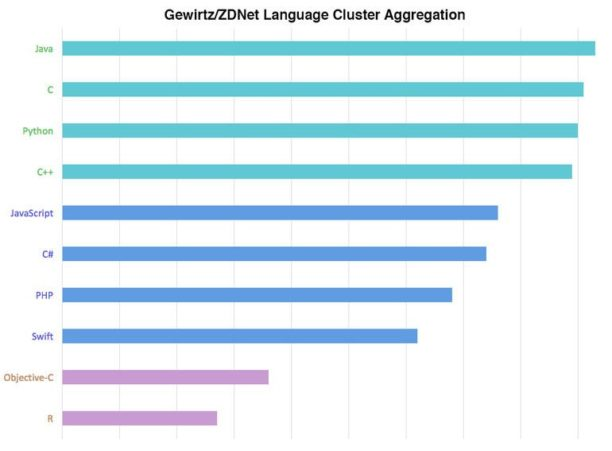
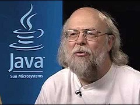

On appelle langage informatique un langage formel utilisé lors de la conception, la mise en œuvre, ou l'exploitation d'un système d'information.
Il existe principalement 4 type de langages informatiques :
Des langages de programmation qui permettent de réaliser des traitements, des méthodes formelles, ou encore des algorithmes.
Des langages de définition de données
Des langages de requête, comme SQL, qui permettent de chercher une donnée spécifique à l’aide d’une « requête » (recherche) comme dans les bases de données par exemple.
Des langages de balisage, qui permettent de créer des interfaces utilisateur.
Il est très difficile de connaître le nombre total de langages informatiques étant donné que tout le monde peut en avoir créé un. On estime qu’il existe environ 200 langages utilisés publiquement et régulièrement.
Voici la liste des 10 langages les plus utilisés au monde, la plupart étant des langages de programmation :
 Le Java, C, Python et C++ sont les langages les plus utilisés.
Création et créateur:

Java est un langage de programmation développé initialement par Sun Microsystems puis par Oracle.
Il a été créé par James Gosling et Patrick Naughton, employés de Sun Microsystems, avec le soutien de Bill Joy (cofondateur de Sun Microsystems en 1982), et présenté officiellement le 23 mai 1995.
Le langage a vu le jour parce que Patrick Naughton n’était pas satisfait par le langage C++ utilisé chez Sun.
Java est maintenant développé par Oracle.
Fonctionnement:
Le Java utilise exclusivement des « objets ». Il fonctionne sur une machine virtuelle ; JVM (Java Virtual Machine)
Ce langage est actuellement le plus utilisé au monde et dans tous types de logiciels.
Java permet de développer des applications client et serveur. Quelque chiffres et données:
97 % des bureaux d'entreprise exécutent Java
89 % des bureaux (ou ordinateurs) des Etats-Unis exécutent Java
9 millions de développeurs Java dans le monde
Choix n° 1 des développeurs
Plate-forme de développement n° 1
3 milliards de téléphones mobiles exécutent Java
100 % des lecteurs Blu-ray livrés avec Java
5 milliards de cartes Java utilisées
125 millions de périphériques TV exécutent Java
Les 5 fabricants d'équipement d'origine principaux fournissent Java ME
Influences:
Il a influencé de nombreux autres langages de programmations tel que C#, Python ou encore PHP. Il a lui-même été influencé par le langage C++, il est d’ailleurs très similaire.
Origine du nom:
Le nom Java est une référence au café « Java » qui était est la boisson favorite de nombreux programmeurs, ce qui explique la tasse de café en logo.
Exemple de programme:
Voici le programme "Hello world" en Java :
public class HelloWorld
{
public static void main(String[] args)
{
System.out.println("Hello world!");
}
}
Création et créateur:
C est un langage de programmation Inventé au début des années 1970 qui est devenu l’un des plus utilisés. Le langage C a été inventé au cours de l'année 1972 dans les Laboratoires Bell par Dennis Ritchie et Ken Thompson.
Fonctionnement:
C'est un des langages les plus utilisés car :
il existe depuis le début des années 1970
il a influencé de nombreux langages plus récents dont C++, Java, C# et PHP ; sa syntaxe en particulier est largement reprise.
il met en œuvre un nombre restreint de concepts, ce qui facilite sa maîtrise et l'écriture de compilateurs simples et rapides.
il permet l'écriture de logiciels qui n'ont besoin d'aucun support à l'exécution (ni bibliothèque logicielle ni machine virtuelle).
Influences:
Le langage C a influencé C# et C++ ainsi que Java, et a lui-même été influencé par le langage "B"
Origine du nom:
Le nom de « C » provient de la suite des langages « A » et « B »
Exemple de programme: C’est en C que le premier programme « Hello world » a été écrit, proposé en exemple par ces créateurs.
Depuis, ce programme ayant pour but d’afficher « Hello world » est devenu l'exemple de référence pour présenter les bases d'un nouveau langage.
Voici le programme "Hello world" en C :
#include <stdio.h>
int main(void)
{
printf("hello, world\n");
return 0;
}
Python est un langage inventé en 1991 par Guido van Rossum.
Guido van Rossum est le créateur de Python. En 1989, profitant d’une semaine de vacances durant les fêtes de Noël, il utilise son ordinateur personnel pour écrire la première version du langage.
Fonctionnement:
Python est un langage de programmation multiplateformes.
Il peut s'utiliser dans de nombreux contextes et s'adapter à tout type d'utilisation grâce à des bibliothèques spécialisées.
Il est également apprécié par les pédagogues qui y trouvent un langage où la syntaxe est clairement séparée avec mécanismes de bas niveau, permettant une initiation aisée aux concepts de base de la programmation.
Python est particulièrement utilisé comme langage de script pour automatiser des tâches simples mais fastidieuses. Il possède également de nombreuses extensions destinées au calcul numérique.
Influences:
Python a été influencé par Java et Perl. Il est d’ailleurs similaire à ce dernier.
Origine du nom:
Le nom « Python » viens d’un nom de série télévisée que Guido adorais ; « Monty Python's Flying Circus »
Exemple de programme:
Voici le programme "Hello world" en Python :
Le langage HTML (HyperText Markup Language) est langage de balisage conçu pour représenter les pages web.
C’est un langage inventé en 1991 par Tim Berners-Lee et "publié" en 1997. HTML a été inventé pour permettre d'écrire des documents hypertextuels liant les différentes ressources d’Internet avec des hyperliens pour pouvoir naviguer facilement sur le net.
Fonctionnement:
La version acctuellement le plus utilisée est le HTML 5.
C’est un langage permettant d’écrire de l’hypertexte, d’où son nom.
Il est très souvent associé au CSS (Cascading Style Sheets) gère la partie graphique d’une page web ou encore au langage JavaScript, dérivé du Java, pour inclure des scripts souvent interractif dans la page.
Influences:
HTML étant un langage indépendant, il n'a pas vraiment été influencé par un autre langage. Cependant, il a permis l'invention des langages CSS et PHP.
Origine du nom:
Ce nom a été choisi pour insister sur le fait de l'hypertexte; d'ou HyperText Markup Language
Exemple de programme:
Voici le programme "Hello world" en HTML :
<!DOCTYPE html>
<html>
<head>
<meta charset="utf-8" />
<title>Hello world !</title>
</head>
<body>
<p>Hello world !</p>
</body>
</html>